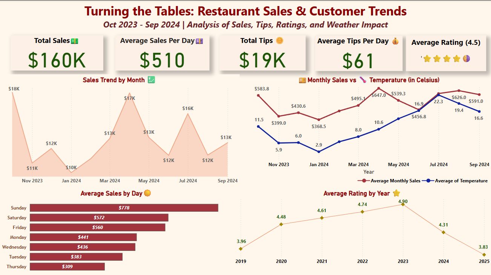

Driving data-driven decisions for a local restaurant to improve revenue, customer satisfaction, and operational efficiency
A family-owned Thai restaurant in Abbotsford was experiencing declining sales and customer engagement. The business had limited visibility into the factors influencing daily revenue and customer satisfaction, making operational decisions largely dependent on experience and intuition.
Working as part of a Business Analytics project team, I conducted an end-to-end analysis combining restaurant sales, weather, calendar, tipping, and Google review data.
The objective was to identify the factors associated with revenue performance and customer experience, then translate those findings into practical recommendations for promotions, staffing, inventory planning, and service improvement.
The analysis focused on five business questions:
The original POS data contained aggregated daily food, beverage, tax, and tip information. Non-operational days with zero sales were removed, resulting in a final analytical dataset of 313 daily records.
Day-of-week analysis revealed a substantial difference between the restaurant's strongest and weakest days.
Sunday — $778.22 average daily sales
Thursday — $309.25 average daily sales
Thursday therefore generated approximately 60% lower average sales than Sunday, highlighting a clear weekday demand gap.
A Multiple Linear Regression model was developed to estimate daily sales using:
Sunday was used as the reference day and non-holiday as the reference holiday category.
Daily Sales = 664.5 + 8.63(Temperature) − 375.4(Monday) − 395.8(Tuesday) − 317.4(Wednesday) − 446.2(Thursday) − 217.4(Friday) − 195.0(Saturday) + 364.6(Holiday)
The model acheived RMSE: 276.99 with reported variability of approximately ±118.49 across evaluation results.
Holding the other model variables constant, Thursday had a coefficient of approximately −$446 relative to Sunday. This supported the exploratory finding that Thursday represented a significant demand weakness.
Holiday status had an estimated coefficient of approximately $365 relative to non-holiday days, holding the other variables constant.This suggests holidays represented an important demand opportunity for the restaurant.
The model estimated a temperature coefficient of approximately $8.63 per 1°C holding the other variables constant. The regression results therefore supported using weather forecasts as one input when planning restaurant operations and promotions.
To understand customer experience beyond numerical sales data, 400+ Google reviews were analyzed using Python, NLTK, and VADER. Sentiment scores were calculated from review text and compared with tipping patterns.
Positive Customer Language: Frequently occurring positive terms included “delicious”, “friendly”, “great”
Negative Customer Language: Negative reviews included terms such as “disappointed”, “messed”, “hard”
The text analysis helped surface recurring customer-experience themes that could not be identified through sales data alone.
The relationship between customer sentiment and tipping was more complex than expected. The raw relationship showed a weak positive correlation of r = 0.210.
However, after comparing seven-day rolling averages, the relationship became negative, r = −0.294. Later periods also contained high-tip days without corresponding increases in review sentiment.
Customer sentiment and tipping showed an inconsistent relationship over time.
Therefore, tipping should not be treated as a direct proxy for customer satisfaction.
Review timing, review volume, service conditions, and other unobserved factors may also influence the relationship.
This interactive Power BI dashboard consolidated restaurant performance into an executive-level view covering:
Total Sales • Total Tips • Average Daily Sales • Tip Percentage • Customer Ratings • Weekly Sales •
Day-of-Week Performance • Weather Trends
The dashboard was designed to translate detailed analytical results into information that restaurant management could quickly interpret and use for operational decisions.

The analysis also identified important limitations.
The available POS data contained aggregated daily sales rather than item-level transactions. As a result, the project could not perform detailed menu engineering or product-level profitability analysis.
The model also did not include factors such as Competitor activity, Local events, Tourism, Detailed customer traffic, and Item-level transactions.
A future version of the project could incorporate these variables, compare multiple forecasting algorithms, and evaluate model performance using additional validation metrics.
This project demonstrates an end-to-end business analytics workflow combining SQL-based data integration, exploratory analysis, regression modeling, NLP sentiment analysis, and Tableau dashboarding..
Rather than analyzing sales in isolation, the project connected operational performance with weather, calendar effects, tipping behavior, and customer feedback to identify actionable opportunities in weekday demand, staffing, inventory planning, promotions, and service quality.
View full code, SQL queries, and analysis on GitHub
← Back